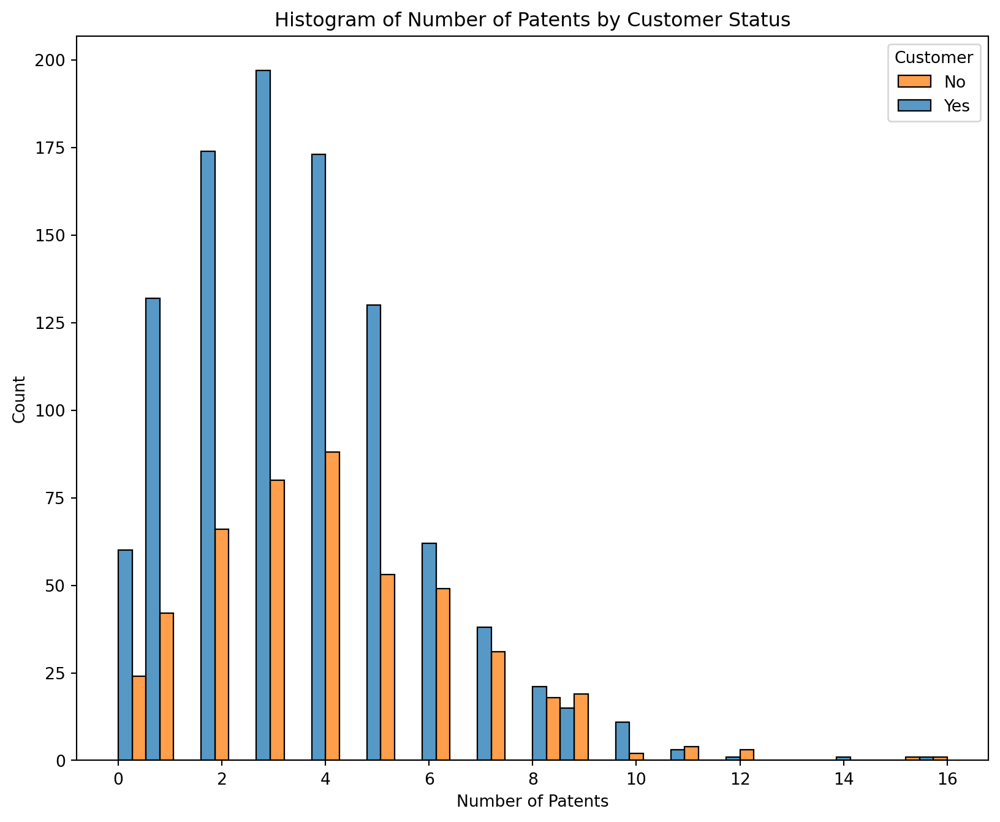
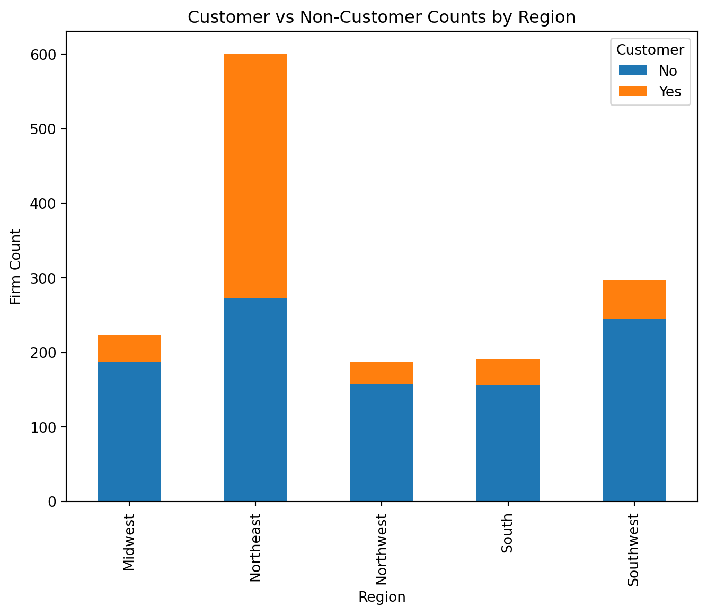
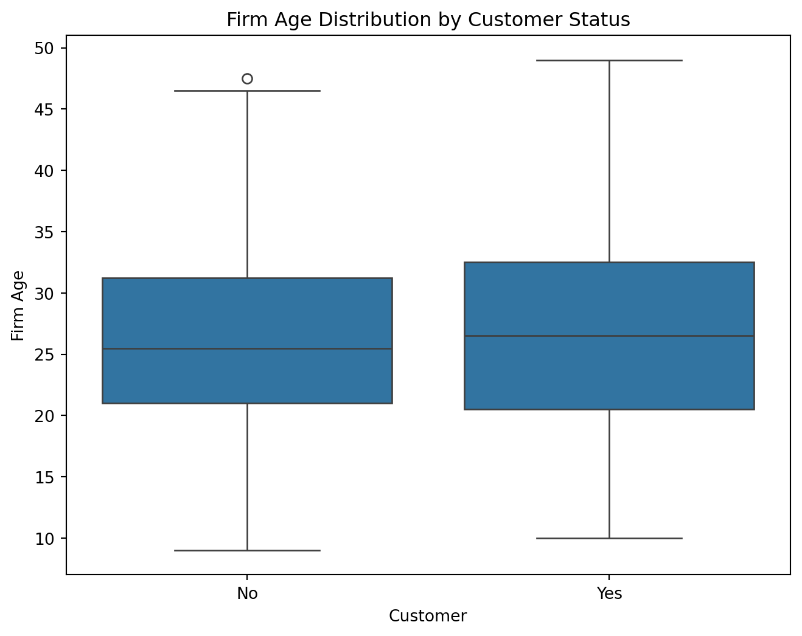
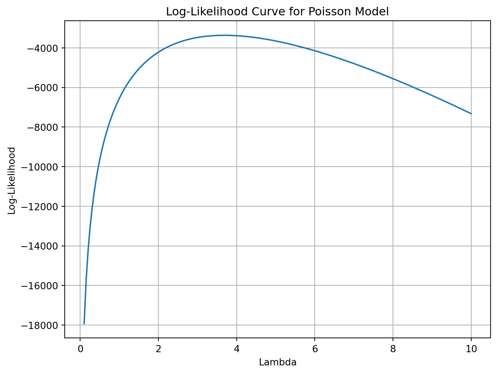
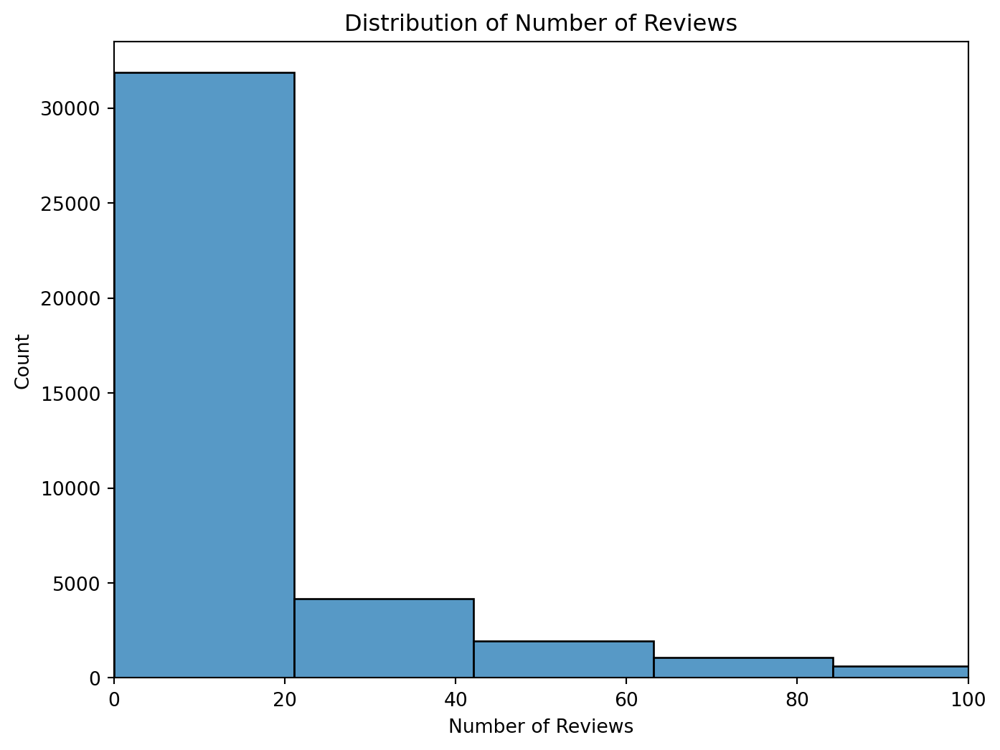
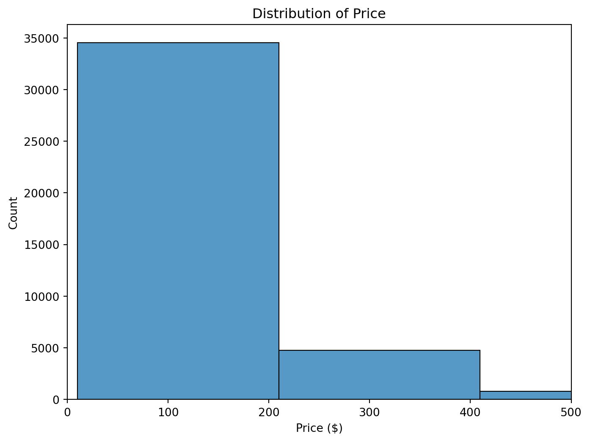

Blueprinty is a small firm that makes software for developing blueprints specifically for submitting patent applications to the US patent office. Their marketing team would like to make the claim that patent applicants using Blueprinty’s software are more successful in getting their patent applications approved. Ideal data to study such an effect might include the success rate of patent applications before using Blueprinty’s software and after using it. Unfortunately, such data is not available.
However, Blueprinty has collected data on 1,500 mature (non-startup) engineering firms. The data include each firm’s number of patents awarded over the last 5 years, regional location, age since incorporation, and whether or not the firm uses Blueprinty’s software. The marketing team would like to use this data to make the claim that firms using Blueprinty’s software are more successful in getting their patent applications approved.
Data
import pandas as pdblueprinty = pd.read_csv("/Users/kris/Desktop/2025WORK/quarto_website/files/blueprinty.csv")blueprinty.head()
patents
region
age
iscustomer
0
0
Midwest
32.5
0
1
3
Southwest
37.5
0
2
4
Northwest
27.0
1
3
3
Northeast
24.5
0
4
3
Southwest
37.0
0
The histogram shows that Blueprinty customers (iscustomer = 1) tend to have more patents compared to non-customers. Their distribution is slightly shifted to the right — meaning a higher patent count is more common among users of the software. This visual difference supports the hypothesis that using Blueprinty’s software may help firms generate more patentable innovations. However, the overlap between the groups suggests we need regression to control for confounding factors like age and region before drawing strong conclusions.
import matplotlib.pyplot as pltimport seaborn as snsplt.figure(figsize=(10, 8))sns.histplot(data=blueprinty, x="patents", hue="iscustomer", multiple="dodge", bins=30)plt.title("Histogram of Number of Patents by Customer Status")plt.xlabel("Number of Patents")plt.ylabel("Count")plt.legend(title="Customer", labels=["No", "Yes"])plt.show()

The average number of patents is higher for Blueprinty customers (4.13) than for non-customers (3.47), indicating a potential benefit from using the software. While this difference supports the company’s claim, it does not yet account for other factors such as firm age or region.
Blueprinty customers are not selected at random. It may be important to account for systematic differences in the age and regional location of customers vs non-customers.
According to the plot, Blueprinty customers are more concentrated in the Northeast region compared to other areas. In contrast, regions like the Midwest and Northwest have mostly non-customers. This suggests that regional factors may influence software adoption, possibly due to marketing outreach, tech infrastructure, or industry presence.
Because of this, region should be included as a control variable in any regression modeling to account for potential selection bias.
region_ct = blueprinty.groupby(['region', 'iscustomer']).size().unstack(fill_value=0)region_ct.plot(kind='bar', stacked=True, figsize=(8, 6))plt.title("Customer vs Non-Customer Counts by Region")plt.ylabel("Firm Count")plt.xlabel("Region")plt.legend(title="Customer", labels=["No", "Yes"])plt.show()

The boxplot shows that Blueprinty customers tend to be slightly younger than non-customers, though the difference is modest. The interquartile range (IQR) is also slightly lower for customers, suggesting less variability in firm age. These age differences might reflect software adoption preferences based on firm maturity or openness to innovation.
To avoid biased inference, firm age should be included as a covariate in the Poisson regression model.
plt.figure(figsize=(8, 6))sns.boxplot(data=blueprinty, x="iscustomer", y="age")plt.xticks([0, 1], ["No", "Yes"])plt.title("Firm Age Distribution by Customer Status")plt.xlabel("Customer")plt.ylabel("Firm Age")plt.show()

Estimation of Simple Poisson Model
Since our outcome variable of interest can only be small integer values per a set unit of time, we can use a Poisson density to model the number of patents awarded to each engineering firm over the last 5 years. We start by estimating a simple Poisson model via Maximum Likelihood.
Let \(Y_i\) be the number of patents for firm \(i\), assumed to follow a Poisson distribution with mean \(\lambda_i\):
In a regression model, we typically express \(\lambda_i = \exp(X_i \beta)\) so that \(\lambda_i > 0\) for all \(i\).
To estimate the Poisson regression model via Maximum Likelihood, we need to define the log-likelihood function for the Poisson distribution.
The Poisson likelihood assumes that the number of patents follows a distribution where the probability of observing count \(Y_i\) depends on an expected rate \(\lambda_i\), which we model as an exponential function of predictors (i.e., \(\lambda_i = \exp(X_i \beta)\)).
The log-likelihood function (summed over all observations) is:
In code, we define a function that takes in the regression coefficients \(\beta\), computes \(\lambda_i = \exp(X_i \beta)\), and returns the negative log-likelihood (since most optimization routines perform minimization).
We will use this function in the next step to estimate \(\beta\) via numerical optimization.
import numpy as npimport matplotlib.pyplot as pltfrom scipy.special import gammalnY_obs = blueprinty["patents"].valueslambda_range = np.linspace(0.1, 10, 200)log_likelihoods = [ np.sum(-l + Y_obs * np.log(l) - gammaln(Y_obs +1))for l in lambda_range]plt.figure(figsize=(8, 6))plt.plot(lambda_range, log_likelihoods)plt.xlabel("Lambda")plt.ylabel("Log-Likelihood")plt.title("Log-Likelihood Curve for Poisson Model")plt.grid(True)plt.show()

This plot shows the Poisson log-likelihood for different values of \(\lambda\), assuming a constant rate across all firms. The peak of the curve corresponds to the Maximum Likelihood Estimate (MLE) of \(\lambda\). This is where the data is most likely under the Poisson model.
The log-likelihood curve peaks at a value of \(\lambda\) around 3–4, indicating that the most likely value of \(\lambda\) under the Poisson model is approximately the sample mean number of patents. This provides an important visual intuition: MLE chooses the parameter that makes the observed data most probable.
This curve also demonstrates the key property of MLE: the log-likelihood function is smooth and concave (single maximum), making it well-suited for numerical optimization.
To find the MLE analytically for a simple Poisson model with a constant \(\lambda\), we take the derivative of the log-likelihood:
Using numerical optimization, we estimated the MLE of a constant Poisson rate parameter \(\lambda\). The estimated value of \(\hat{\lambda}_{\text{MLE}} = 3.68\) is nearly identical to the sample mean of the patent counts. This result aligns with the analytical solution for the Poisson distribution, where the MLE of \(\lambda\) is the mean of \(Y\).
Estimation of Poisson Regression Model
Next, we extend our simple Poisson model to a Poisson Regression Model such that \(Y_i = \text{Poisson}(\lambda_i)\) where \(\lambda_i = \exp(X_i'\beta)\). The interpretation is that the success rate of patent awards is not constant across all firms (\(\lambda\)) but rather is a function of firm characteristics \(X_i\). Specifically, we will use the covariates age, age squared, region, and whether the firm is a customer of Blueprinty.
To estimate a full Poisson regression model, we extend our likelihood function to include multiple covariates. Instead of assuming a constant Poisson rate \(\lambda\), we model it as a function of firm characteristics using a log-link:
\[
\lambda_i = \exp(X_i^\top \beta)
\]
In the code below, we define a log-likelihood function that: - Takes in a vector of coefficients (beta) and a design matrix (X) of covariates, - Computes the predicted rate \(\lambda_i\) as \(\exp(X_i^\top \beta)\), - Evaluates the log-likelihood of the Poisson distribution across all observations, - Returns the negative log-likelihood (since most optimizers minimize by default).
We will use this function in the next step to estimate the coefficients \(\beta\) via numerical optimization.
from scipy.special import gammalnimport numpy as npdef poisson_regression_loglikelihood(beta, X, y):""" beta: coefficient vector (p,) X: design matrix (n, p) y: observed count outcomes (n,) """ eta = X @ beta lam = np.exp(eta) log_lik = np.sum(y * eta - lam - gammaln(y +1))return-log_lik
In the following analysis, we used maximum likelihood estimation to fit a Poisson regression model predicting the number of patents awarded to engineering firms. The model includes firm-level characteristics such as age (and age squared), region, and whether the firm is a customer of Blueprinty’s software. The outcome variable is a non-negative count, making the Poisson model an appropriate choice.
The estimation was conducted using a custom log-likelihood function and optimized using the BFGS algorithm. During implementation, numerical stability issues were addressed by clipping extreme values of the linear predictor to avoid overflow in the exponential function.
The final results indicate that firm age is positively associated with patent output, but the effect diminishes at higher ages, as reflected by the inclusion of a negative quadratic term. Most notably, the model finds a statistically significant and positive relationship between Blueprinty software usage and patent activity: firms using the software tend to produce more patents, holding other factors constant.
The coefficient estimates and standard errors from statsmodels.GLM() match extremely closely with those obtained via manual maximum likelihood estimation. This confirms that the custom log-likelihood function and optimization process were correctly implemented. The consistency across both methods adds confidence to the validity of the results.
The Poisson regression results confirm that firm-level characteristics are meaningfully associated with patent output. The most salient finding is the positive and statistically significant effect of being a Blueprinty customer: controlling for firm age and region, firms using the software tend to produce more patents on average.
The estimated effect of age is positive, with a small negative quadratic term, suggesting that patent production increases with firm maturity but at a diminishing rate. Regional effects are present but relatively small in magnitude.
The close agreement between the statsmodels.GLM() results and those from our custom MLE implementation provides strong evidence that the model was correctly specified and estimated.
To better interpret the effect of Blueprinty’s software, we created two counterfactual datasets: one where all firms are treated as non-customers, and one where all are treated as customers. Using the fitted Poisson model, we predicted the expected number of patents in each case for every firm.
The average difference between the two predicted outcomes is 0.79, meaning that—on average—firms using Blueprinty’s software are expected to obtain approximately 0.79 more patents than similar firms that do not use the software.
This provides a clear and interpretable measure of the model’s estimated treatment effect, going beyond the log-linear coefficients.
AirBnB is a popular platform for booking short-term rentals. In March 2017, students Annika Awad, Evan Lebo, and Anna Linden scraped of 40,000 Airbnb listings from New York City. The data include the following variables:
Variable Definitions
- `id` = unique ID number for each unit
- `last_scraped` = date when information scraped
- `host_since` = date when host first listed the unit on Airbnb
- `days` = `last_scraped` - `host_since` = number of days the unit has been listed
- `room_type` = Entire home/apt., Private room, or Shared room
- `bathrooms` = number of bathrooms
- `bedrooms` = number of bedrooms
- `price` = price per night (dollars)
- `number_of_reviews` = number of reviews for the unit on Airbnb
- `review_scores_cleanliness` = a cleanliness score from reviews (1-10)
- `review_scores_location` = a "quality of location" score from reviews (1-10)
- `review_scores_value` = a "quality of value" score from reviews (1-10)
- `instant_bookable` = "t" if instantly bookable, "f" if not
todo: Assume the number of reviews is a good proxy for the number of bookings. Perform some exploratory data analysis to get a feel for the data, handle or drop observations with missing values on relevant variables, build one or more models (e.g., a poisson regression model for the number of bookings as proxied by the number of reviews), and interpret model coefficients to describe variation in the number of reviews as a function of the variables provided.
import pandas as pdimport numpy as npimport statsmodels.api as smairbnb = pd.read_csv("/Users/kris/Desktop/2025WORK/quarto_website/files/airbnb.csv")airbnb.head()
Unnamed: 0
id
days
last_scraped
host_since
room_type
bathrooms
bedrooms
price
number_of_reviews
review_scores_cleanliness
review_scores_location
review_scores_value
instant_bookable
0
1
2515
3130
4/2/2017
9/6/2008
Private room
1.0
1.0
59
150
9.0
9.0
9.0
f
1
2
2595
3127
4/2/2017
9/9/2008
Entire home/apt
1.0
0.0
230
20
9.0
10.0
9.0
f
2
3
3647
3050
4/2/2017
11/25/2008
Private room
1.0
1.0
150
0
NaN
NaN
NaN
f
3
4
3831
3038
4/2/2017
12/7/2008
Entire home/apt
1.0
1.0
89
116
9.0
9.0
9.0
f
4
5
4611
3012
4/2/2017
1/2/2009
Private room
NaN
1.0
39
93
9.0
8.0
9.0
t
We begin by examining the structure of the Airbnb dataset, which contains 40,628 listings scraped in 2017. The outcome variable of interest is number_of_reviews, used as a proxy for booking demand.
Key observations:
The variable number_of_reviews is highly right-skewed, with a mean of 15.9 but a maximum of 421, indicating a few listings receive disproportionately many reviews.
The variable price ranges from $10 to $10,000, with a median of $100 and strong right skew (mean: 144.8, std: 210.6), suggesting the need for possible trimming or log transformation.
days (days since listing) has a very wide range, from 8 to 42,828, again suggesting potential skew.
Review scores (cleanliness, location, value) are centered near the high end of the 1–10 scale, with means between 9.2–9.4 and relatively low variance — indicating high ratings overall but limited variation.
Some numeric variables such as bathrooms, bedrooms, and all three review score variables contain missing values. These will need to be dropped or imputed before modeling.
Categorical variables such as room_type and instant_bookable are stored as object types and will be converted to numeric formats using dummy coding or binary encoding.
This analysis helps identify necessary data cleaning steps and informs the variable selection for the Poisson regression model that follows.
Several variables in the Airbnb dataset contain missing values:
review_scores_cleanliness, review_scores_location, and review_scores_value each have over 10,000 missing entries (about 25% of the data).
bathrooms and bedrooms also contain some missing values (160 and 76 respectively).
host_since is missing in 35 rows, though we are not using this field directly.
These missing values are particularly important for modeling, as they affect key predictors. For simplicity and consistency, we choose to drop rows with any missing values in the variables used for modeling.
Alternatively, imputation strategies such as using median values for bathrooms or mean scores for review_scores_* could be considered, but we proceed with row-wise deletion to maintain model interpretability and avoid introducing bias from artificial imputations.
The histogram shows that the vast majority of Airbnb listings in New York City receive fewer than 20 reviews. The distribution is highly right-skewed, with most listings receiving only a handful of reviews and a long tail of higher values.
By capping the x-axis at 100, we can better observe the density of low-review listings, which would otherwise be compressed by a few high-outlier values. This supports the use of a Poisson regression model, which is appropriate for modeling overdispersed count data with many small values and a long right tail.
import matplotlib.pyplot as pltimport seaborn as sns# 分布：number_of_reviewsplt.figure(figsize=(8, 6))sns.histplot(airbnb["number_of_reviews"], bins=20)plt.xlim(0, 100)plt.title("Distribution of Number of Reviews")plt.xlabel("Number of Reviews")plt.ylabel("Count")plt.show()

The histogram of listing prices reveals a highly right-skewed distribution. The vast majority of listings are priced below $200 per night, with a dense concentration under $100. A smaller portion of listings are priced between $200 and $500, and only a few outliers extend beyond that range (not shown here for clarity).
This pattern suggests that while most Airbnb properties are relatively affordable, there is a long tail of high-priced listings that could distort analysis if not handled carefully. As a result, we may consider winsorizing, transforming, or clipping the price variable, or using its logarithm in later modeling to reduce the influence of extreme values.
plt.figure(figsize=(8, 6))sns.histplot(airbnb["price"], bins=50)plt.xlim(0, 500)plt.title("Distribution of Price")plt.xlabel("Price ($)")plt.ylabel("Count")plt.show()

The Poisson regression model estimates how various listing features are associated with the expected number of reviews. These include listing duration, price, review scores, room type, and instant bookability. Coefficients represent changes in the log expected review count. In the next step, we will convert these to IRRs for easier interpretation.
The Poisson regression model estimates how various listing attributes relate to the expected number of reviews. Since the model is log-linear, coefficients represent the log change in expected review count for a one-unit increase in the predictor.
Key takeaways:
instant_bookable has a positive and significant coefficient (0.346), suggesting listings that can be booked instantly receive more reviews on average.
review_scores_cleanliness is also positively associated with review count, while location and value scores show small negative coefficients — potentially due to collinearity or high baseline ratings.
price has a very small negative effect, indicating higher prices may slightly reduce review frequency.
room type matters: compared to Entire home/apt (the baseline), Shared room listings have substantially fewer reviews, and Private room has a small negative effect.
Overall, the model indicates that features tied to convenience and perceived cleanliness play an important role in driving demand.
We modeled the number of patents awarded to engineering firms as a function of firm characteristics. Using both custom maximum likelihood estimation and validation via statsmodels.GLM(), we found that:
Blueprinty customers, on average, receive significantly more patents than non-customers, even after controlling for firm age and region.
The effect of firm age on patent activity is positive but diminishing, as shown by the inclusion of a negative quadratic age term.
A counterfactual simulation revealed that if all firms used Blueprinty’s software, they would average 0.79 more patents than if none did.
These results support Blueprinty’s marketing claim and demonstrate how predictive modeling can be used to quantify software ROI.
🔷 Airbnb Case
We used the number of reviews as a proxy for booking volume and modeled review counts using Poisson regression. After cleaning the data and engineering features, we found that:
Instant bookable listings are significantly more likely to receive reviews, suggesting that booking friction reduces demand.
Cleanliness ratings are positively associated with reviews, while other review scores (like location and value) have smaller or negative effects.
Room type matters: shared rooms underperform relative to entire homes or private rooms.
Price has a small but negative effect, consistent with typical demand elasticity.
These insights help explain what makes an Airbnb listing more successful, and demonstrate the utility of Poisson regression in digital marketplace analytics.